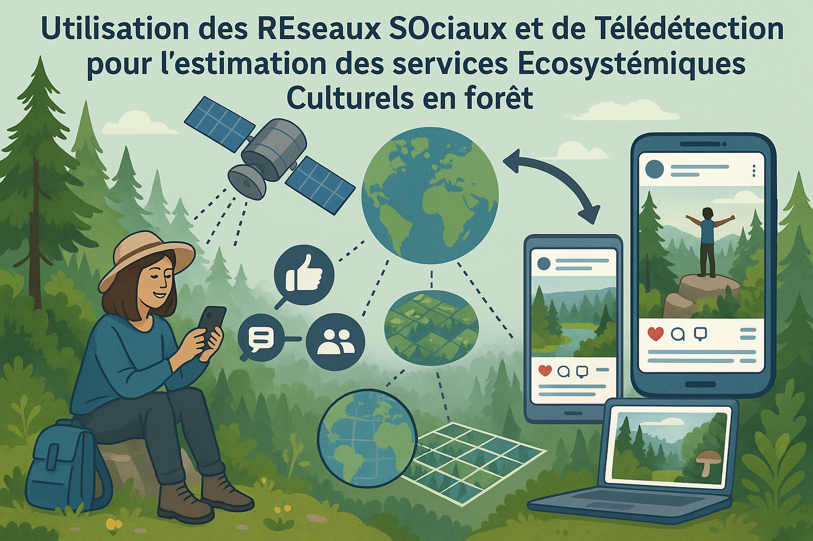
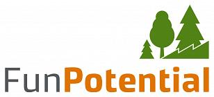
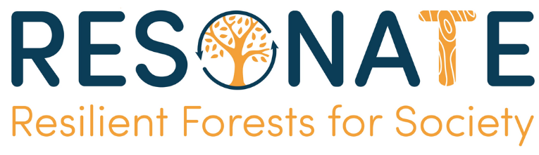

Past projects
FUNPOTENTIAL (2021 - 2024) - Biodiversa+ project aiming to develop disturbance-resilient forest management concepts and policies that balance the provision of timber and climate services, and sustain biodiversity in a changing climate. In this project, I participated to a work package led by the LESSEM research unit (Georges Kunstler, Björn Reineking) dedicated to the estimation of the effect of functional diversity on the resilience of European forests to disturbances.

RESONATE (2021 - 2025) -
H2020 project led by the European Forest Institute aiming
to generate the needed knowledge and practices for making European forests,
the services they provide, and related economic activities more resilient to
future climate change and disturbances. In this project, I participated to a
work package led by the LESSEM research unit (Georges Kunstler, Björn Reineking)
dedicated to the estimation of the effect of functional diversity on the resilience
of European forests to disturbances.
